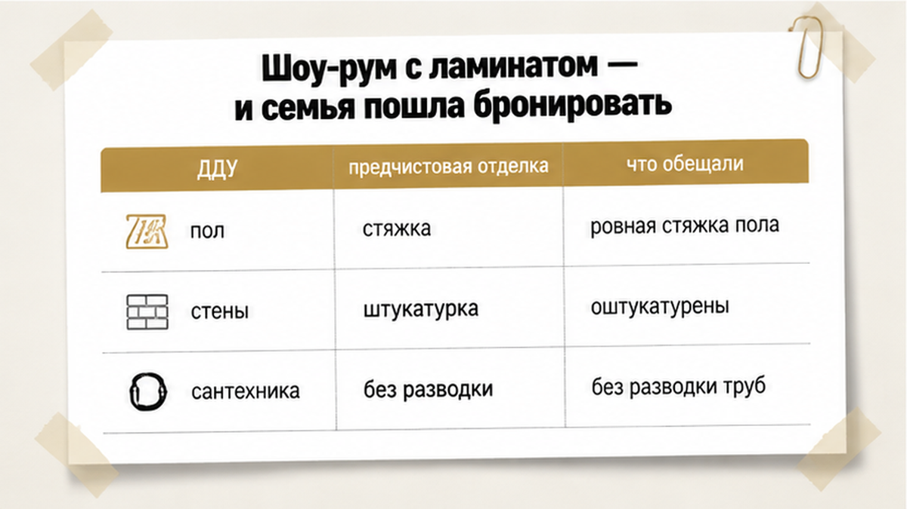
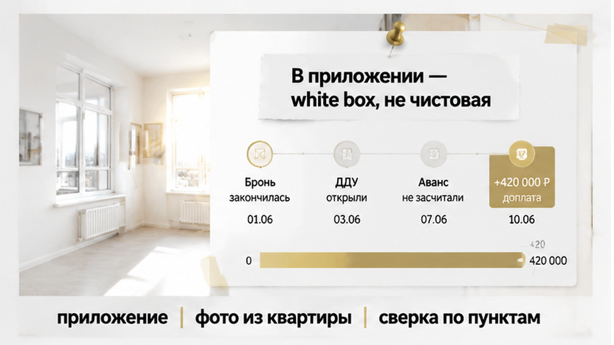
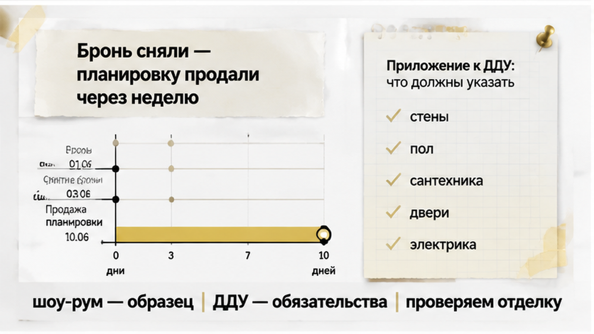
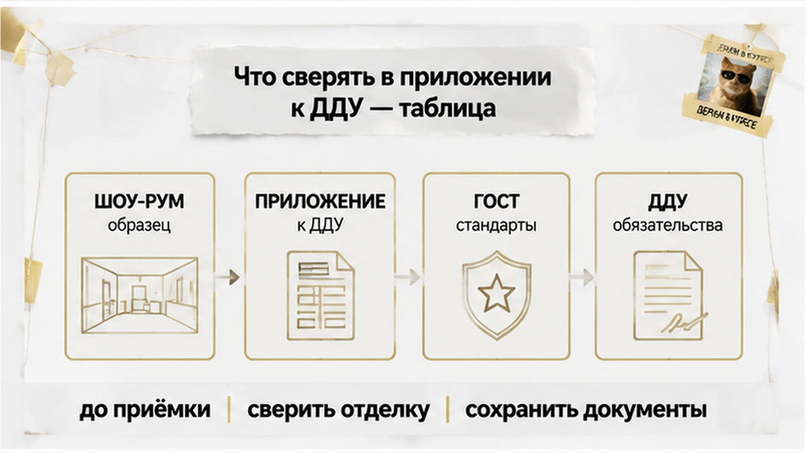

Одно слово в договоре стоило тюменской семье 780 тысяч рублей. В шоу-руме им показали двушку с ламинатом, обоями и плиткой в санузле — «вот в таком виде и передаём». В ДДУ, который они открыли только на пятый день брони, стояло другое слово: предчистовая. Между этими двумя словами — голые стены, стяжка вместо пола и вся отделка за свой счёт. До конца брони оставались сутки.
Я — Святослав Шакин, The Риэлтор, Тюмень. Разбираю такие договоры до подписания — коротко и по делу. Полные разборы ДДУ и кейсы, как в этой истории, — в Telegram и MAX.

Была пятница, вечер. Ольга с мужем приехали в офис продаж на первом этаже дома — того самого, где они присмотрели квартиру. Менеджер провёл их в шоу-рум: 54 квадрата, светлый ламинат, натяжной потолок, плитка в ванной, розетки на местах. Пахло новым.
«Вот так и сдадим», — сказал менеджер. Не «примерно так». Не «это дизайн-проект». Именно — так.
Дальше всё пошло быстро. Ипотека одобрена, ставка держится ограниченное число дней, квартира на этом этаже одна. Бронь — пять дней, взнос за неё внесли тут же, на стойке. Договор обещали «прислать позже, он типовой».
Я вижу эту связку в Тюмени постоянно. Человек принимает решение глазами: он стоит в отделанной квартире, трогает подоконник, прикидывает, куда встанет диван. А подписывать он потом будет не квартиру, а текст. И текст этот описывает совсем другой объект.
Шоу-рум — это витрина. Юридически он не значит ничего. Ни одна фраза менеджера в зале не становится обязательством застройщика, если её нет в договоре.
Проект договора пришёл в четверг, ближе к ночи. Пятьдесят страниц PDF, мелким шрифтом, плюс три приложения отдельными файлами. Ольга написала мне в одиннадцатом часу: «Посмотрите, пожалуйста, там всё нормально? Завтра последний день брони».
Я попросил прислать не только сам договор, а обязательно приложения. Именно там живёт самое дорогое.
Открыл пункт про предмет договора. Площадь, этаж, срок передачи — всё сходится. А дальше строка: объект передаётся с предчистовой отделкой в соответствии с приложением № 2.
Открыл приложение № 2. Список работ на одну страницу: стяжка пола, штукатурка стен, разводка электрики без установки розеток и выключателей, окна с подоконниками, входная дверь, счётчики. Всё.
Ни ламината. Ни обоев. Ни плитки. Ни унитаза. Ни той самой квартиры, в которой они стояли накануне и решали, куда встанет диван.

В буклете это называлось красиво: white box. Переведу на обычный русский. Это стены, выровненные под покраску или обои, пол — бетонная стяжка, из электрики торчат провода, санузел — голая коробка с трубами. Жить нельзя. Заезжать нельзя. Нужно ещё раз нанимать бригаду и покупать всё, что вы видели в шоу-руме.
Чистовая отделка — это когда квартиру можно принять, завезти вещи и ночевать. Предчистовая — это когда можно только начинать ремонт. Разница в одну приставку. Разница в деньгах — как раз те 780 тысяч, в которые семье потом посчитали отделку их 54 метров по нормальной, не самой дорогой смете.
И вот что важно. Застройщик здесь ничего не нарушил. В договоре честно написано: предчистовая. В приложении честно перечислены работы. Обманул не документ — обманула картинка в зале и слово менеджера, которое нигде не зафиксировано.
Ольга спросила меня прямым текстом: «А если бы мы подписали?». Ответ простой и неприятный. Если бы подписали — застройщик передал бы им квартиру строго по приложению № 2, и был бы полностью прав. А 780 тысяч они искали бы уже после сделки, когда ипотека выбрана, первый взнос вложен, а денег на ремонт в бюджете не заложено.
Через два дня мы сидели в переговорке отдела продаж. Тот же менеджер, та же улыбка. Только на столе теперь лежал не буклет, а прайс.
Отделка — отдельной строкой. 420 тысяч.
Она посмотрела на меня. Я — в телефон, где с утра был открыт пункт договора. В ДДУ стояло слово «предчистовая». В шоу-руме стояла кухня.
Объясню по-человечески, без договорного языка. Предчистовая отделка — это когда стены выровнены, на полу стяжка, из стены торчат провода под розетки, стоят батареи и окна. И всё. Ни обоев, ни ламината, ни плитки в санузле, ни межкомнатных дверей, ни унитаза. Чистовая — это ровно то, что вам показали: заходи с чемоданом и живи.
Разница между двумя похожими словами — вот эти 420 тысяч. Плюс полгода ремонта. Плюс субботы в строительном.
| Что показали в шоу-руме | Что написано в ДДУ |
|---|---|
| Обои, крашеные откосы | Штукатурка стен, без финиша |
| Ламинат, плинтус | Цементная стяжка |
| Плитка, унитаз, раковина | Гидроизоляция и выпуски труб |
| Межкомнатные двери | Дверные проёмы |
| Люстры, розетки в рамках | Провода выведены, точки не установлены |
Я спросил менеджера прямо: вы же говорили — квартира сдаётся вот так. Он не спорил. Пожал плечами: «Это демо. Витрина. У нас все так смотрят».
Смотрят — да, все. Платят потом не все.
Дальше пошла арифметика, от которой у людей садится голос. Этих 420 тысяч у пары не было свободными. То есть деньги были — но они лежали под кухню, шкаф-купе и переезд. Отдать их застройщику значило въехать в квартиру, где есть ламинат, но не на чем спать.
Взяли паузу до вечера. Правильно сделали. Решение «ай, доплатим, не будем портить настроение» в переговорке, где тебе улыбаются, всегда кажется дешевле, чем оно есть.

Утром она написала одну строчку: снимаем.
Я передал в отдел продаж. Голос на том конце стал заметно суше — так бывает, когда сделка, которую уже вписали в план месяца, уходит из таблицы.
А через неделю ту самую планировку продали. Другим людям. С тем же шоу-румом на первом этаже и тем же словом «предчистовая» в договоре.
И вот здесь обычно начинается спор. Проиграли они или выиграли? Похожий сюжет был, когда в ДДУ обещали кладовку, а на ключах её не оказалось — там тоже решает приложение, а не буклет.
Считаю вслух, без красивых слов. ДДУ они не подписали, первый взнос не внесли, деньги остались при них. Потеряли три недели, понравившуюся квартиру и веру в то, что менеджер и договор говорят одно и то же. Не потеряли — 420 тысяч, которых не было, и год ремонта в жилье, которое покупали как готовое.
Мне важна в этой истории одна вещь. Решение приняли не по буклету, не по кухне в шоу-руме и не по фразе «у нас все так покупают». Решение приняли по приложению к договору — по скучному листу, где перечислено, что именно застройщик обязан сделать в вашей квартире.
Этот лист существует всегда. Его просто редко открывают до брони.
Скажите честно: вы бы доплатили 420 тысяч и заехали в готовое — или сняли бы бронь и пошли искать заново?
И тут всегда всплывает один спор, на котором комментарии делятся ровно пополам. Кто здесь виноват: застройщик, который показал красивую квартиру и промолчал про приложение, — или покупатель, который подписал договор, не открыв его до конца?

Приложение про отделку почти всегда написано сухим языком. Это не заговор, это строительный документ. Проблема в другом: люди читают его глазами, а не переводят на человеческий. Вот как я перевожу.
| Что смотреть | Как звучит в договоре | Что это значит в квартире |
|---|---|---|
| Стены | «Штукатурка, подготовка под чистовую отделку» | Голая серая стена. Обоев, краски и плитки не будет |
| Полы | «Стяжка», «выравнивающий слой» | Бетон. Ламинат, плитку и плинтус вы кладёте сами |
| Потолок | «Подготовка основания» | Плита перекрытия со швами. Натяжной потолок — за ваш счёт |
| Двери | «Входная дверь» — и всё | Межкомнатных дверей нет. В квартире будут проёмы |
| Санузел | «Разводка систем», «выпуски» | Торчащие трубы. Ни ванны, ни унитаза, ни раковины |
| Электрика | «Электромонтажные работы без установки приборов» | Провода из стены. Розетки, выключатели и люстры покупаете вы |
| Окна и откосы | «Оконные блоки» | Окно стоит, а откосы и подоконники — отдельный вопрос, читайте буквы после запятой |
Метод простой. Берёте приложение и напротив каждой строки пишете от руки: «что я увижу, когда открою дверь». Если в этой колонке у вас получается голый бетон, а в голове — шоу-рум с диваном и светильниками, значит, вы смотрели не свою квартиру.
Шоу-рум — это не обман. Это витрина. Застройщик имеет полное право показать, как может выглядеть квартира после ремонта, и он показывает лучшее. Юридически вас связывает не то, что вы увидели на четвёртом этаже, а то, что написано в договоре и приложениях к нему.
Поэтому первый вопрос в шоу-руме звучит не «сколько стоит» и даже не «когда сдача». Он звучит так: эта отделка входит в мой ДДУ или это дизайн-проект? Если менеджер отвечает «ну примерно так и будет» — это не ответ. Просите показать пункт в приложении. Есть пункт — хорошо. Нет пункта — значит, вам показали мебельный салон.
Второй момент — про качество. Даже когда чистовая отделка честно прописана в договоре, она делается не «на глаз», а по строительным нормам и ГОСТам: там прописаны допуски по ровности стен, стяжке, стыкам. Это важная вещь, но её часто понимают наоборот. ГОСТ отвечает на вопрос «ровно ли сделано». Он не отвечает на вопрос «а должны ли были вообще делать». На «должны ли» отвечает только ваш договор.
И третий момент, про который забывают чаще всего. Реклама, буклет, рендер на сайте и красивое видео — это не приложение к ДДУ. Если менеджер что-то пообещал голосом, попросите зафиксировать это письменно: в допсоглашении или хотя бы в переписке с официальной почты. Устная договорённость в новостройке живёт ровно до смены менеджера.
Что делать, если договор уже подписан, а вы только сейчас открыли приложение? Не паниковать. Сначала считаем, во сколько обойдётся довести квартиру до жилого состояния, и сравниваем с ценой соседних лотов, где чистовая действительно прописана. Иногда выясняется, что вы всё равно в плюсе. Иногда — что переплатили за воздух, и тогда есть смысл говорить с застройщиком до приёмки, а не после неё. Расторжение ДДУ из-за того, что покупатель «не так понял» презентацию, суды разбирают тяжело: подпись стоит под текстом, а не под шоу-румом. Об этом же — в разборе приёмки квартиры в новостройке, где половина претензий вырастает как раз из невнимательно прочитанных приложений.
Отдельно держите в голове деньги. Пока дом строится, ваши средства лежат на эскроу-счёте, и это ваша страховка по стройке. Если застройщик меняет юрлицо или присылает новый ДДУ, сверяйте реквизиты до внесения. А когда ипотеку одобрили, но эскроу не открыли, стопор часто в документах, а не в «плохом банке». Но эскроу защищает от того, что дом не достроят. От того, что в квартире не окажется обоев, он не защищает — тут работает только текст договора.
Я обычно прошу клиентов сделать одну очень скучную вещь: прислать мне ДДУ с приложениями до того, как внесены деньги за бронь. Двадцать минут чтения — и человек точно знает, что получит: бетон, штукатурку или готовую квартиру. Ни одного сюрприза на приёмке из-за отделки у нас за это время не было. Не потому, что я волшебник, а потому, что мы читаем договор до подписи, а не после.
Квартира в новостройке — это не картинка на четвёртом этаже. Это несколько страниц текста, которые решают, войдёте вы в дом с чемоданом или с перфоратором. Разница в цене между этими двумя сценариями обычно измеряется бюджетом небольшого автомобиля. И решается она за один вечер — до брони.